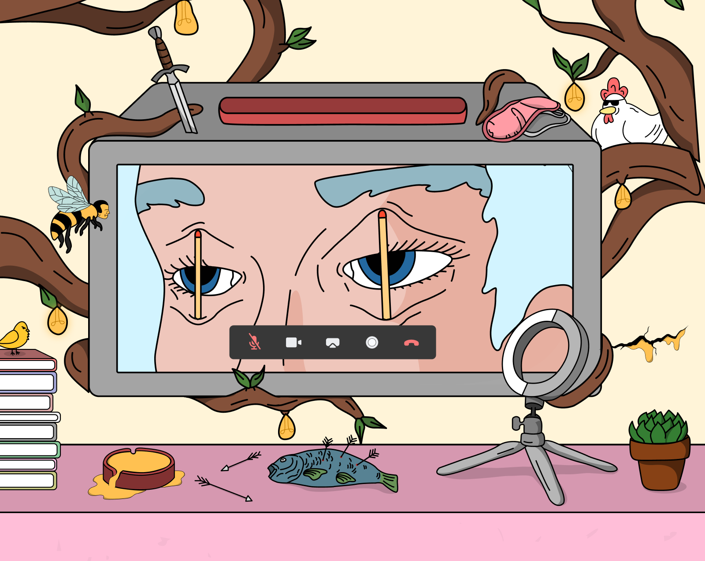
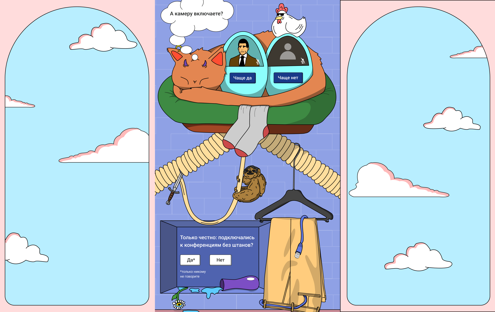
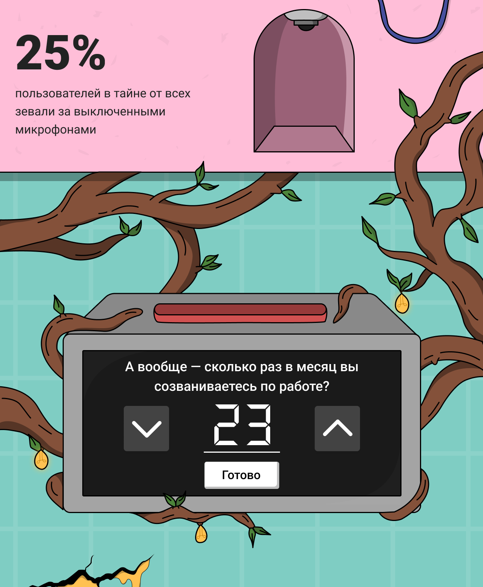
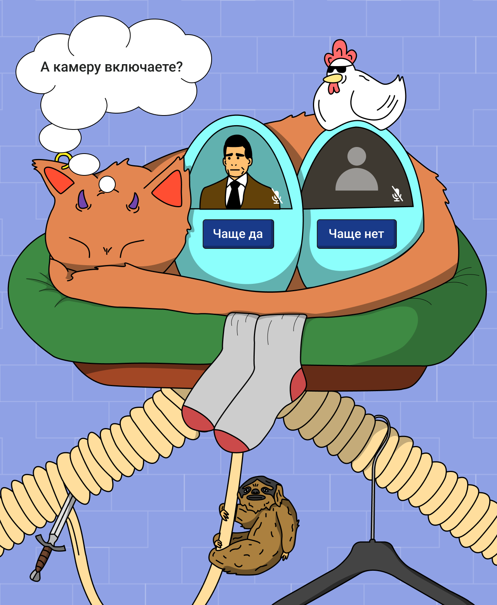
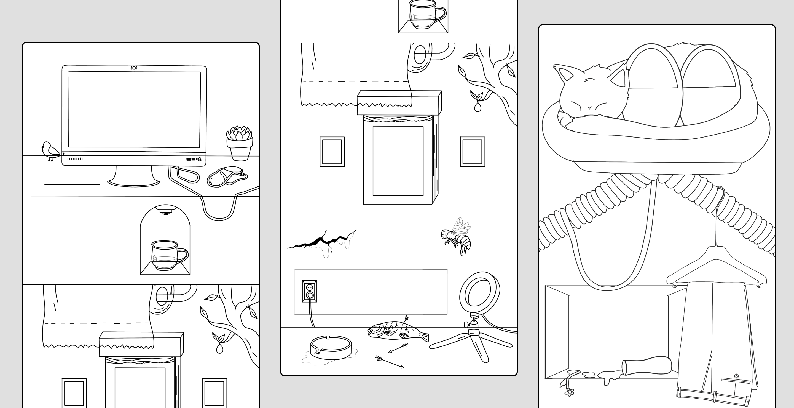
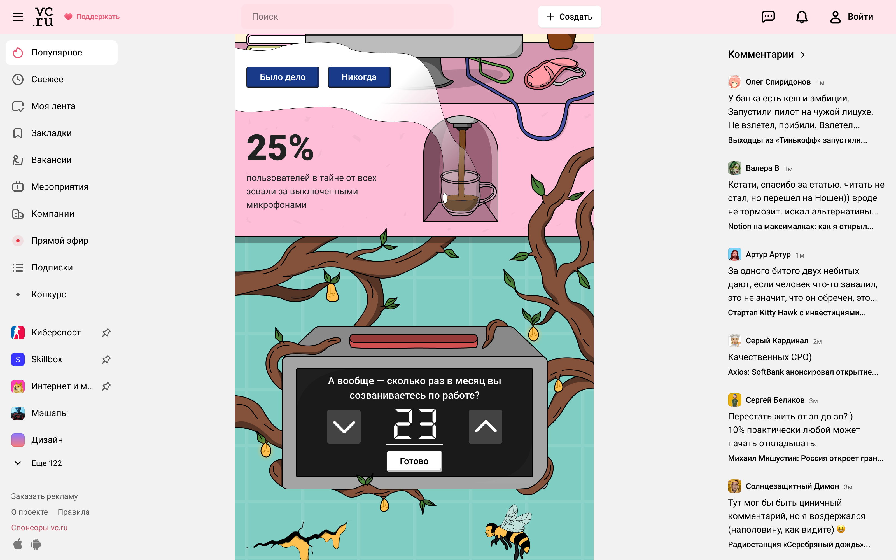

SPECIAL PROJECT
Dion x vc.ru
This was one of the first major advertising campaigns for Dion targeting a large audience. They partnered with vc.ru, an online media platform with over 20 million monthly users. The project was created to advertise an online video calling service, exploring the lives of people behind their laptop cameras—a theme that resonated strongly during the early days of COVID.


Goal
The creative team developed a brilliant concept: showcasing the funny behaviors of users during online conferences. The challenge was to create a visual style that would stop users mid-scroll while staying true to the producers' vision. The client requested a bright, attention-grabbing project with surreal elements.
I decided to build the entire project as one large illustration with interface elements embedded directly into the artwork. This approach creates an unusual user experience and deeper engagement.


Process
All illustrations were hand-drawn as sketches in Procreate, then converted to vector format and optimized for the web. The project is filled with Lottie animations that respond to user clicks, making every screen feel truly alive.

Results
The project exceeded analyst expectations for conversions to the client's website and received overwhelmingly positive feedback from vc.ru users.
